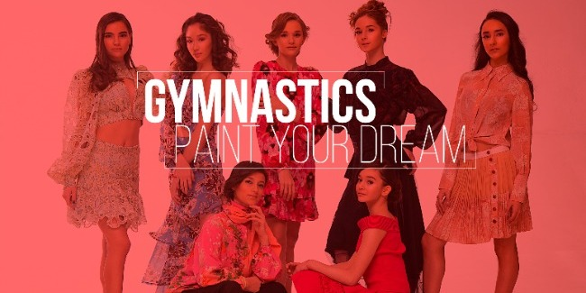
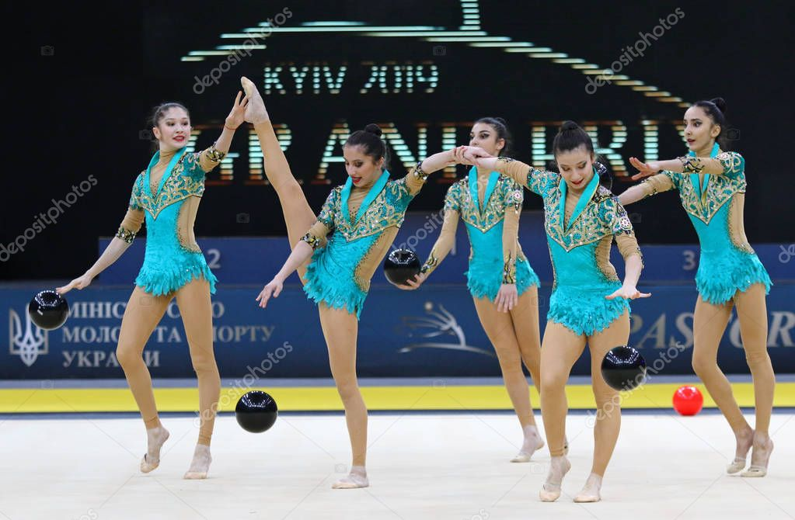
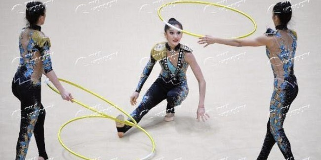
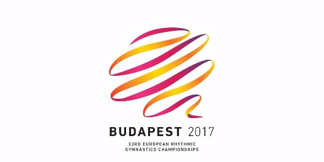
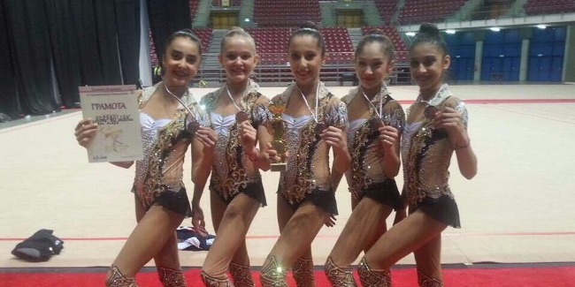

Azərbaycan və İsrailin gimnastika görüşü baş tutdu
19 iyun 2020

Azərbaycan və İsrailin bədii gimnastika üzrə yığma komandalarının çox maraqlı ilk birgə onlayn yarışması baş tutdu.
Ötən gün təşkil edilmiş “battle” adlanan bu yarışda hər iki ölkənin Tokio-2020 Olimpiya Oyunlarına lisenziya qazanmış komandaları iştirak etdi.
Yarışmadan öncə hər iki komanda bir-birinə təqdim olundu. Azərbaycanın “Paxlava”, İsrailin isə “Bamba” komandasının üzvləri bir-birilərinə uğurlar arzuladılar. Daha sonra yarışmanın qaydaları haqqında məlumat verildi.
Komandaların əylənərək iştirak etdikləri bu yarışma 3 hissədən ibarət oldu və təxminən 3 saat çəkən “battle” izləyən hər kəsə həyəcanlı və xoş anlar yaşatdı. Estafet oyunları ilə başlayan yarışmada gimnastlar müəyyən vaxt ərzində oyunu tamamlamlı idilər. Bundan başqa onlar həm də alətlərlə verilən müxtəlif tapşırıqları yerinə yetirdilər. İcra edilmiş bu tapşırıqlara görə komandalar hakimlər tərəfindən qiymətləndirildilər.
Sonda isə hər iki komanda üzvləri bədii gimnastikaya aid sualları cavablandırdılar.
Bu yarışmada hesab qeydə alınsa da, hər iki komanda qalib elan olundu. Elə yarışın da məqsədi karantin günlərinin davam etdiyi və gimnastika yarışlarının olmadığı bir dövrdə gimnastlara yarış əhval-ruhiyyəsini yenidən yaşatmaq, onlayn da olsa, birgə maraqlı zaman keçirərək əylənmək idi.
“Paxlava” komandası bildirdi ki, İsrail komandası ilə ilk canlı görüşdə onlara paxlava təqdim olunacaq. Azərbaycan yığmasının Baş məşqçisi Mariana Vasileva isə dostluq və əməkdaşlıq üçün İsrail yığmasına təşəkkürünü bildirib və hər kəsə sağlamlıq arzu edərək, tezliklə yenidən yarışlarda görüşəcəklərindən ümidvar olduğunu qeyd edib.
İsrail komandasının məşqçisi Raxel Faiqa da belə yarışın təşkili və iştirak üçün Azərbaycan yığmasına təşəkkürünü bildirib və komandamıza uğurlar arzulayıb.
Qeyd edək ki, Azərbaycan Gimnastika Federasiyasının həm “Facebook” səhifəsi, həm də “Youtube” kanalında canlı yayımlanan yarışma böyük maraqla izlənilib.
Bədii gimnastların ilk karantin yarışması
19 iyun 2020

Karantin günlərinin davam etdiyi və yarışların olmadığı bir dövrdə Azərbaycan və İsrailin bədii gimnastika üzrə yığma komandaları birgə onlayn yarışma keçirmək qərarına gəlib.
Belə bir yarışın təşkil edilməsində məqsəd hal-hazırda gimnastika yarışlarının keçirilmədiyi bir zamanda gimnastların yenidən yarış əhval-ruhiyyəsini hiss etməsi, maraqlı zaman keçirərək əylənməsi, eləcə də iki ölkənin komandası arasında əməkdaşlığın və dostluğun möhkəmləndirilməsindən ibarətdir.
“Battle” adlanan bu yarışda Azərbaycan və İsrailin Tokio-2020 Olimpiya Oyunlarına lisenziya qazanmış komandaları iştirak edəcək. Hər iki tərəfdən 1 komanda yarış zamanı gücünü sınayacaq.
Azərbaycan komandası milli şirniyyatlarımızdan olan paxlavanın adı ilə “Paxlava” komandası, İsrailin komandası isə bu ölkənin məşhur qəlyanaltısının adı ilə “Bamba” adlandırılıb.
Yarış zamanı gimnastlar bir neçə estafet oyununda iştirak edəcəklər. Oyunlar arası zamanda isə komandaların üzvləri bədii gimnastika alətləri ilə müxtəlif tapşırıqlar nümayış etdirəcəklər. Yarışın sonunda komandalara bədii gimnastikaya aid 10 sual veriləcək və onlar 2 dəqiqə ərzində sualları cavablandırmalıdırlar. Qalib gəlmiş komandanı isə sonda sürpriz gözləyir.
Əslində isə bu yarışda “qalib” sözü simvolik xarakter daşıyır. Burada hər kəs qalib hesab ediləcək, çünki yarışın məqsədi həm iki ölkə gimnastlarına, həm də izləyənlərə xoş əhval-ruhiyyə yaşatmaqdır.
Bədii gimnastların çox maraqlı ilk karantin yarışmasını 18 iyun Bakı vaxtı ilə 17:00-da (İsrail vaxtı ilə 16:00) izləyə bilərsiniz. Yarışma Azərbaycan Gimnastika Federasiyasının həm “Facebook”, həm də “Youtube” səhifələrində canlı yayımlanacaq.
İzləməyi unutmayın!
Öz arzunu çək
09 mart 2020

Böyük idman nailiyyətləri arxasında illər öncə kiçik arzu ilə döyünən bir ürək dayanır. Kiçik arzu böyüyərək möhtəşəm arenalarda alqışlar sədasına çevrilir.
Məhz bu səbəbdən Azərbaycan Gimnastika Federasiyası “Öz arzunu çək” adlanan layihəyə start verib. Layihə çərçivəsində Heydər Əliyev Mərkəzinin dəstəyi ilə gimnastika növləri üzrə yığma komanda üzvlərinin tanıtım fotosessiyası təqdim olunub. Burada bədii gimnastlar, kişi və qadın idman gimnastları, batutçular, akrobatlar və aerobika gimnastları iştirak edib.
Bu layihə sayəsində gimnastikanın incəsənətlə nə qədər bağlı olduğunun bir daha şahidi olacağıq.
Gimnastika öz əksini incəsənətdə tapır!
Fotosessiyanı buradan izləyə bilərsiniz.
Təşəkkürlərimiz:
Heydər Əliyev Mərkəzi
Leyla Məmmədova – stilist
Fərhad Əlizadə - fotoqraf
Zahid Baydarov - saç ustası
Ruhəngiz Əliyeva – vizajist
Gimnastlarımız Dünya Gimnastradasında iştirak ediblər
15 iyul 2019

Azərbaycan və İsrailin bədii gimnastika üzrə yığma komandalarının çox maraqlı ilk birgə onlayn yarışması baş tutdu.
Ötən gün təşkil edilmiş “battle” adlanan bu yarışda hər iki ölkənin Tokio-2020 Olimpiya Oyunlarına lisenziya qazanmış komandaları iştirak etdi.
Yarışmadan öncə hər iki komanda bir-birinə təqdim olundu. Azərbaycanın “Paxlava”, İsrailin isə “Bamba” komandasının üzvləri bir-birilərinə uğurlar arzuladılar. Daha sonra yarışmanın qaydaları haqqında məlumat verildi.
Komandaların əylənərək iştirak etdikləri bu yarışma 3 hissədən ibarət oldu və təxminən 3 saat çəkən “battle” izləyən hər kəsə həyəcanlı və xoş anlar yaşatdı. Estafet oyunları ilə başlayan yarışmada gimnastlar müəyyən vaxt ərzində oyunu tamamlamlı idilər. Bundan başqa onlar həm də alətlərlə verilən müxtəlif tapşırıqları yerinə yetirdilər. İcra edilmiş bu tapşırıqlara görə komandalar hakimlər tərəfindən qiymətləndirildilər.
Sonda isə hər iki komanda üzvləri bədii gimnastikaya aid sualları cavablandırdılar.
Bu yarışmada hesab qeydə alınsa da, hər iki komanda qalib elan olundu. Elə yarışın da məqsədi karantin günlərinin davam etdiyi və gimnastika yarışlarının olmadığı bir dövrdə gimnastlara yarış əhval-ruhiyyəsini yenidən yaşatmaq, onlayn da olsa, birgə maraqlı zaman keçirərək əylənmək idi.
“Paxlava” komandası bildirdi ki, İsrail komandası ilə ilk canlı görüşdə onlara paxlava təqdim olunacaq. Azərbaycan yığmasının Baş məşqçisi Mariana Vasileva isə dostluq və əməkdaşlıq üçün İsrail yığmasına təşəkkürünü bildirib və hər kəsə sağlamlıq arzu edərək, tezliklə yenidən yarışlarda görüşəcəklərindən ümidvar olduğunu qeyd edib.
İsrail komandasının məşqçisi Raxel Faiqa da belə yarışın təşkili və iştirak üçün Azərbaycan yığmasına təşəkkürünü bildirib və komandamıza uğurlar arzulayıb.
Qeyd edək ki, Azərbaycan Gimnastika Federasiyasının həm “Facebook” səhifəsi, həm də “Youtube” kanalında canlı yayımlanan yarışma böyük maraqla izlənilib.
Azərbaycan gimnastları Dünya Kubokunda çıxışlarını davam etirirlər
27 aprel 2019

Bu gün, Bakıda keçirilən bədii gimnastika üzrə Dünya Kubokunun 2-ci günü start götürür. İştirakçılar növbəti təsnifat günündə çoxnövçülük yarışlarında gürzlər və lent ilə mübarizəyə qoşulacaqlar. Qeyd edək ki, Azərbaycanı fərdi yarışlarda Zöhrə Ağamirova və Veronika Hudis təmsil edir.
Turnirin ikinci hissəsində isə Milli Gimnastika Arenasında qrup komandalarının çıxışları baş tutacaq. Böyüklərdən ibarət qrup hərəkətləri komandamızın kapitanı Siyana Vasilevanın zədəsini nəzərə alaraq, ölkəmizi kubokda Ayna Cəfərova, Nərmin Cahangirova, Simarə Cəfərova, Güllü Ağalarzadə , Narın Qurbanova və Sona Rəhmanovadan ibarət 2-ci komanda təmsil edir. Qızlarımız bu gün, 3 halqa və 2 cüt gürzlə kompozisiyalarını təqdim edəcəklər.
Xatırladaq ki, yarışların ilk gününün nəticələrinə əsasən, Zöhrə Ağamirova halqa ilə finala vəsiqə qazanıb.
Gimnastlarımız beynəlxalq turnirdə 2 finalda çıxış ediblər
18 mart 2019

Dünən, Ukraynanın paytaxtı Kiyevdə bədii gimnastika üzrə Qrna Pri yarışlarının final mərhələsi baş tutub.
Millimizin 2-ci heyətli qrup komandası turnirdə iki final mərhələsində çıxış edib. Ayna Cəfərova, Güllü Ağalarzadə , Simarə Cəfərova, Narın Qurbanova, Nərmin Cahangirova və Humay Əliyevadan ibarət komanda topla icra etdikləri kompozisiyaya görə 16.150 xal alıblar.
3 halqa-2 gürzlə nümayişləri isə qızlara 15.400 xal qazandırıb. Nəticədə təmsilçilərimiz hər iki finalda 7-ci yerdə qərarlaşıblar.
Qrup komandamız həmçinin, çoxnövçülük yarışlarında da 7-ci olub.
İkinci komandamız 5-ci oldu
18 fevral 2019

Bu həftəsonu, Rusiyanın Moskva şəhərində bədii gimnastika üzrə “Grand Prix” (16-17 fevral) yarışları baş tutub.
Ölkəmizi bu turnirdə qrup hərəkətləri proqramında 2-ci heyət komandamız təmsil edib. Simarə Cəfərova, Güllü Ağalarzadə , Narın Qurbanova, Nərmin Cahangirova, Ayna Cəfərova və Humay Əliyevadan ibarət qrup komandası həm 4 gürz-3 halqa, həm də 5 topla çıxışlarına görə finala vəsiqə qazanıblar. Qızlarımız hər iki çıxış üzrə final mərhələsində 6-cı olublar.
Qrup hərəkətləri komandamız həmçinin, çoxnövçülükdə turniri 5-ci yerlə başa vurublar.
Macarıstanın paytaxtı Budapeştdə bədii gimnastika üzrə 33-cü Avropa Çempionatı yekunlaşıb
22 may 2017

19-21 may tarixlərində baş tutan qitə çempionatında ölkəmizi fərdi proqramda Marina Durunda, Jalə Piriyeva və gənclərdən ibarət qrup hərəkətləri komandası təmsil edib.
Bir müddət öncə zədə alaraq, məşqlərinə fasilə verən komandamızın lideri Marina yenidən yarış meydançasında öz gücünü sınayıb. İslam Həmrəyliyi Oyunlarından sonra iştirak etdiyi ikinci böyük turnirdə o, ən yaxşı nəticəni halqa ilə göstərərək, finala qədər yüksəlib. Yekun mərhələdə Marina 16,750 xalla 6-cı yerdə qərarlaşıb.
Güllü Ağalarzadə , Fatimə Əkbərova, Narın Qurbanova, Dərya Sorokina, Nərmin Cahangirovadan ibarət qrup komandamız isə 27 ölkə arasında gedən mübarizədə 9-cu yerlə (30.150 xal) kifayətlənməli olub.
Qızlarımız vətənə medalla qayıtdı
05 may 2017

Bolqarıstanın paytaxtı Sofiyada bədii gimnastika üzrə növbəti beynəlxalq turnir yekunlaşıb (2-3 may).
Yarışda ölkəmizi qrup hərəkətləri proqramında Güllü Ağalarzadə , Darya Sorokina, Nərmin Cahangirova, Narın Qurbanova və Fatimə Əkbərova, fərdi proqramda isə Zöhrə Ağamirova təmsil edib.
Qrup komandamızın gənc və istedadlı qızları bu dəfə də öz çıxışları ilə hakimlərin rəğbətini qazana biliblər. 15 komanda arasında keçən mübarizədə onlar, yalnız Rusiya və Bolqarıstan qrupundan geri qalaraq çoxnövçülükdə fəxri kürsünün 3-cü pilləsinə (31.800 xal) yüksəliblər. Xatırladaq ki, qrup komandamız 19-21 may tarixlərində Macarıstanın paytaxtı Budapeştdə baş tutacaq Avropa Çempionatında da iştirak edəcəklər.
Böyüklər proqramında bu ildən çıxış etməyə başlayan fərdi gimnastımız Zöhrə Ağamirova da hər 4 alətlə çıxışında final mərhələsinə düşə bilib. O, çoxnövçülükdə 6-cı (57,567 xal), lentlə çıxışında isə 4-cü yerdə (13.900 xal) qərarlaşıb. İlk üçlüyü isə Bolqarıstan və İsrail gimnastları bölüşdürüb.
Yuniorların bürünc medalı
13 aprel 2017

Bu həftəsonu, Rusiyanın Moskva şəhərində bədii gimnastika üzrə “Grand Prix” (16-17 fevral) yarışları baş tutub.
Ölkəmizi bu turnirdə qrup hərəkətləri proqramında 2-ci heyət komandamız təmsil edib. Simarə Cəfərova, Güllü Ağalarzadə , Narın Qurbanova, Nərmin Cahangirova, Ayna Cəfərova və Humay Əliyevadan ibarət qrup komandası həm 4 gürz-3 halqa, həm də 5 topla çıxışlarına görə finala vəsiqə qazanıblar. Qızlarımız hər iki çıxış üzrə final mərhələsində 6-cı olublar.
Qrup hərəkətləri komandamız həmçinin, çoxnövçülükdə turniri 5-ci yerlə başa vurublar.
İkinci komandamız 5-ci oldu
24 mart 2015

Bayram əhval - ruhiyyəli bu həftəsonu Fransada bədii gimnastika üzrə hər il keçirilən ənənəvi “Qran-Pri” yarışı və beynəlxalq turnir yekunlaşıb.
Azərbaycan gimnastı Marina Durunda Tiye şəhərində “Qran-Pri”-də çıxış edərək 3 medal qazandı: onun hesabına gürzlərlə hərəkətə görə qızıl, lentlə hərəkətlərə görə gümüş və halqa ilə çıxışına görə bürünc medalı yazıldı. Ümumi hesaba daha bir bürünc medalı isə böyüklərdən ibarət qrup komandasının heyəti “6 gürz – 2 halqa ilə” kompozisiya ilə çıxışlarının nəticələrinə əsasən yazdırdılar.
Fransanın digər şəhəri Kaledə gimnastımız Jalə Piriyeva yeniyetmələr arasında çoxnövçülükdə, iplə və gürzlərlə üç gümüş medal, həmçinin halqa ilə qızıl medal əldə etdi. Digər gimnastımız Ayşən Bayramova topla çıxışına görə gümüş medal qazanıb. Gimnastlarımız komanda hesabında da birinci yeri tutmuşlar.
Həmin günlərində Macarıstanın paytaxtında beynəlxalq turnir "2015 Kupa Tavaszi" başa çatıb. Gimnastlarımız Budapeştdən xeyli medal gətiriblər:
Fidan Yusifzadə - dörd "qızıl" (alətsiz, top, halqa ilə və çoxnövçülükdə),
Leyla Dəmirova - üç "qızıl" (alətsiz, çoxnövçülükdə, halqa ilə),
Dərya Farşbafşahriyari - "bürünc" (topla),
Fatimə Əkbərova - iki "qızıl" (çoxnövçülükdə, halqa ilə),
Ülkər Hüseynova - "qızıl" (top ilə) və "gümüş" (çoxnövçülükdə),
Alina Türina - iki "gümüş" (çoxnövçülükdə, alətsiz) və "bürünc" (topla),
Nərminə Səmədova - "gümüş" (topla), üç "bürünc" (alətsiz, çoxnövçülükdə, iplə),
Güllü Ağalarzadə - "gümüş" (topla)
Qrup hərəkətləri komandası - "qızıl" (beş halqa, 10 gürz).